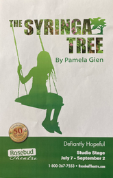
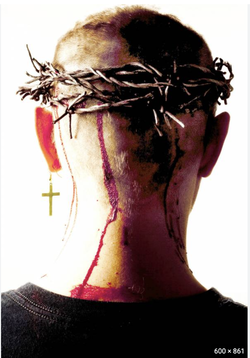

"The Syringa Tree"
by Pamela Gien
Rosebud Theatre
Lead Role: Elizabeth
"This one-woman show, seamlessly acted by Katharine Venour, extolls the triumph of love over hate, goodness over evil, and fellowship over separation, as South Africa’s regime is viewed through the eyes of an innocent white child. In 100 minutes, Venour plays 24 characters of varying ages, races and sexes…In what is a tour de force performance, Venour gives the characters who enter Elizabeth’s life their own voice and physicality…The Syringa Tree is a memory play, fragile and fragmented, that is sometimes beautiful and sometimes brutal, but it is always haunting. It is a reminder of theatre’s ability to transport us to distant times and places with mere words if they are delivered with the kind of conviction Venour gives them in this production."
Louis B. Hobson, The Calgary Herald
"From the first moments of Venour’s stunning performance, creatively, clearly delineating each voice and role, I was hanging on the edge of Elizabeth’s loves and longings. On a set comprised of only a colored screen, a wooden swing and a painted floor, Venour evokes sharp images of the South Africa where Elizabeth is growing up…When The Syringa Tree was suddenly, satisfyingly over, my companion and I said “Wow,” and “Powerful.” We heard others echo our words as we walked out. The Syringa Tree, flooded with fear and hope, longing and joy and loss, truly is a powerful story."
Laureen F. Guenther, The Strathmore Times
There are 22 characters represented in this story of the heart. They are all portrayed by Katharine Venour...her seamless transformation from one character to another. She never lost me. She was an adorable innocent child, an old man, a middle-aged woman, and Elizabeth or ‘monkey’ as Salamina called her. There are some light moments, filled with childlike wonder and humour and so much passion...It was clear to me that we all saw the same heart wrenching, loving, wondrous performance.
Cathy Burness, The Chestermere Anchor
by Pamela Gien
Rosebud Theatre
Lead Role: Elizabeth
"This one-woman show, seamlessly acted by Katharine Venour, extolls the triumph of love over hate, goodness over evil, and fellowship over separation, as South Africa’s regime is viewed through the eyes of an innocent white child. In 100 minutes, Venour plays 24 characters of varying ages, races and sexes…In what is a tour de force performance, Venour gives the characters who enter Elizabeth’s life their own voice and physicality…The Syringa Tree is a memory play, fragile and fragmented, that is sometimes beautiful and sometimes brutal, but it is always haunting. It is a reminder of theatre’s ability to transport us to distant times and places with mere words if they are delivered with the kind of conviction Venour gives them in this production."
Louis B. Hobson, The Calgary Herald
"From the first moments of Venour’s stunning performance, creatively, clearly delineating each voice and role, I was hanging on the edge of Elizabeth’s loves and longings. On a set comprised of only a colored screen, a wooden swing and a painted floor, Venour evokes sharp images of the South Africa where Elizabeth is growing up…When The Syringa Tree was suddenly, satisfyingly over, my companion and I said “Wow,” and “Powerful.” We heard others echo our words as we walked out. The Syringa Tree, flooded with fear and hope, longing and joy and loss, truly is a powerful story."
Laureen F. Guenther, The Strathmore Times
There are 22 characters represented in this story of the heart. They are all portrayed by Katharine Venour...her seamless transformation from one character to another. She never lost me. She was an adorable innocent child, an old man, a middle-aged woman, and Elizabeth or ‘monkey’ as Salamina called her. There are some light moments, filled with childlike wonder and humour and so much passion...It was clear to me that we all saw the same heart wrenching, loving, wondrous performance.
Cathy Burness, The Chestermere Anchor
Photo credit: Morris Ertman
"Wit"
by Margaret Edson
Pacific Theatre
Lead Role: Vivian Bearing
*Jessie Richardson Acting Nomination for Best Lead Actress
by Margaret Edson
Pacific Theatre
Lead Role: Vivian Bearing
*Jessie Richardson Acting Nomination for Best Lead Actress
"Katharine Venour does a very fine job as the woman who believes that intellect can conquer all, but finds out otherwise...Venour maintains Vivian’s intellectual curiosity without ever falling into stage-academic clichés, and she’s horrifyingly convincing in rendering Vivian’s excruciating pain near the end." Jerry Wasserman
"Director Angela Konrad has assembled a wonderful cast centered on the magnetic Katharine Venour, who makes Vivian stoic and droll and always likeable."
David C. Jones, Vancouver Presents.
A Vancouver, je voulais « du théâtre » pour l’escale anglophone du Vase des Arts. « Billy Elliot » en comédie musicale ? Non. A côté, le Pacific Theatre aménagé dans une partie d’une église anglicane proposait « Wit ». Bon...
Denis Mahaffey, Le Vase Communicant
"...brillant comme un diamant au début, puis devenant lumineux comme une opale."
Denis Mahaffey, French reviewer 'Le Vase Communicant', email to PT theatre office
Ron Reed Soul Food Blog: Reviews and Responses for "Wit"
Photo credit: Emily Cooper


Photo credits: Emily Cooper
"Jesus Freak"
by Peter Boychuk
Pacific Theatre
Role: Susan
by Peter Boychuk
Pacific Theatre
Role: Susan
"Venour finds all of Susan’s vulnerability and grit, allowing the character’s ongoing struggle with breast cancer to inform her portrait." Colin Thomas
"Venour always brings such maturity, calm and stillness to the stage and these qualities are exactly what define Susan." Jo Ledingham
Photo credit: Emily Cooper
"Late Company"
by Jordan Tannahill
Touchstone Theatre
Role: Tamara
*Jessie Richardson Acting Nomination for Best Lead Actress
by Jordan Tannahill
Touchstone Theatre
Role: Tamara
*Jessie Richardson Acting Nomination for Best Lead Actress
"Venour has an almost ethereal quality about her, a cool calmness. But when her character’s son is attacked – bullied, in fact – by Debora, Venour turns into a lioness."
Jo Ledingham
"Every so often you meet a play...that brings you to your knees. This is Late Company."
Prism Magazine
"This is a must-see play...You won't be disappointed."
Review Vancouver
"Art in the service of confronting and healing a serious social problem: bullying...Don't miss it."
Vancouver Observer
Jo Ledingham
"Every so often you meet a play...that brings you to your knees. This is Late Company."
Prism Magazine
"This is a must-see play...You won't be disappointed."
Review Vancouver
"Art in the service of confronting and healing a serious social problem: bullying...Don't miss it."
Vancouver Observer
Pictured with Gerry Mackay; Photo credit: Tim Matheson
"The Last Days of Judas Iscariot"
by Stephen Adly Guirgis
Pound of Flesh Theatre
Role: Cunningham
by Stephen Adly Guirgis
Pound of Flesh Theatre
Role: Cunningham
"A conviction-filled, spitfire of a lawyer named Cunningham (Katharine Venour)..."
"...the cast is a veritable powerhouse that brings together some of Vancouver’s finest talents... These individuals are some of the best in our city, and watching them work with such intelligent, well-written material is a thrill." Murray Paterson
"And Katharine Venour shines as Cunningham, Judas’s lawyer; the straight woman of the piece, Cunningham is the most difficult role in the script, but Venour keeps the character philosophically hungry and, in one of the most moving passages, makes her bereft."
Colin Thomas
Colin Thomas
Photo credit: Tim Matheson

"My Name is Asher Lev"
by Chaim Potok
Pacific Theatre
Role: Rivkeh
by Chaim Potok
Pacific Theatre
Role: Rivkeh
"And there is no more transparent actor in town than Katharine Venour. Her portrait of Rivkeh is skinless—and moving." Colin Thomas
Pictured with Giovanni Mocibob; Photo credit: Ron Reed
Pictured as art model with Giovanni Mocibob as Asher; Photo credit: Ron Reed
Katharine Venour as Rivkeh; Photo credit: Ron Reed


Pictured above Giovanni Mocibob, Nathan Schmidt, Katharine Venour; Photo credits: Ron Reed
"Shadowlands"
by William Nicholson
Pacific Theatre
Role: Joy Gresham
*Jessie Richardson Acting nomination for Best Lead Actress
"Both Ron Reed as C. S. ("Jack") Lewis and Katharine Venour as Joy Davidman Gresham are wonderfully evocative of the spirit and emotion of this unusual coupling. Venour, in particular, provides not only the spark and wit Gresham reputedly possesses but also the charm and warmth she likely did not." John Jane
Queen Milli of Galt
by Gary Kirkham
Chemainus Theatre
by Gary Kirkham
Chemainus Theatre
Pictured with Mark Dumez and Bernard Cuffling
"Venour is perfect as Milli, beautiful, hard and vulnerable."
Brian Wilford, Cowichan Valley Citizen, May 2004
"Kirkham has written Milli a demanding role. Katharine Venour gives it magnificent acting. She changes from an old woman, at the start and end of the play, to a bright young twenty-something for the main performance. These transitions are done with aplomb. She changes from the bitterness of love lost, through a cynical royal skeptic - "one of those women who are going to vote" - to a gentle lover..."
"Katharine Venour plays the vulnerable yet brash and outspoken Milli with subtle candour and grace - the two were meant for each other while at the same time remaining evenly matched sparring partners worthy of Kate and Petruchio." Robert Mitchell, April 19, 2004
"Venour captured Milli's flinty pluck convincingly"
Adrian Chamberlain, Time Colonist
"Katharine Venour is impressive as willowy, wily Milli who uses spunk and truth to win the heart of Prince Edward during his 1919 visit to Galt, Ontario...verbal jousting between the couple is priceless"
Peter Rusland, The Pictorial, April 25, 2004
Brian Wilford, Cowichan Valley Citizen, May 2004
"Kirkham has written Milli a demanding role. Katharine Venour gives it magnificent acting. She changes from an old woman, at the start and end of the play, to a bright young twenty-something for the main performance. These transitions are done with aplomb. She changes from the bitterness of love lost, through a cynical royal skeptic - "one of those women who are going to vote" - to a gentle lover..."
"Katharine Venour plays the vulnerable yet brash and outspoken Milli with subtle candour and grace - the two were meant for each other while at the same time remaining evenly matched sparring partners worthy of Kate and Petruchio." Robert Mitchell, April 19, 2004
"Venour captured Milli's flinty pluck convincingly"
Adrian Chamberlain, Time Colonist
"Katharine Venour is impressive as willowy, wily Milli who uses spunk and truth to win the heart of Prince Edward during his 1919 visit to Galt, Ontario...verbal jousting between the couple is priceless"
Peter Rusland, The Pictorial, April 25, 2004
"Holy Mo"
by Lucia Frangione
Pacific Theatre
Role: Follie
by Lucia Frangione
Pacific Theatre
Role: Follie
"Underneath the cleverness and good-natured humor, what these three clowns are telling is a story of sacrificing oneself for a greater purpose...the clowns mesmerize the audience with timeless tales of struggle, success and self-actualization." Plank Magazine
"Venour...has a lovely singing voice"
Jerry Wasserman for Vancouver Presents
Jerry Wasserman for Vancouver Presents
Pictured Erla Faye Forsythe;
Photo credits: Damon Calderwood
Photo credits: Damon Calderwood
Pictured with Julia Mackay and Erla Faye Forsythe; Photo credit: Damon Calderwood


Pictured above with Julia Mackay and Erla Faye Forsythe; Photo credits: Damon Calderwood
"Mother Teresa is Dead"
by Helen Edmundson
Pacific Theatre
by Helen Edmundson
Pacific Theatre
"Venour and Julie McIsaac (Jane), two of the most transparent actors in town, channel pure emotion." Colin Thomas
"Venour, who has been composed and wise as Frances in Act 1, reveals her character’s fearful vulnerability that leads to less than charitable behavior." Jo Ledingham
"Venour brings a soft-spoken gentleness to the role, painting the image of a woman who found peace in India, but just barely manages to keep hold of it." Murray Paterson
Pictured with Julie McIsaac Photo credit: Ron Reed
"St. Joan"
by George Bernard Shaw
Candlelight Productions with Pacific Theatre
Role: Joan
*Jessie Richardson Acting Nomination for Best Lead Actress
by George Bernard Shaw
Candlelight Productions with Pacific Theatre
Role: Joan
*Jessie Richardson Acting Nomination for Best Lead Actress
"Katharine Venour is unwavering in her self-assurance and her devotion to her God, and the cast creates a seamless ensemble around her centre as the inevitable tragedy unfolds." Kathleen Oliver, The Georgia Straight, April 15-22, 1999
Agnes of God
by John Pielmeier
Pacific Theatre
Role: Agnes
by John Pielmeier
Pacific Theatre
Role: Agnes
“Pacific Theatre’s Agnes of God contains some of the best acting you’ll ever see...Katharine Venour’s performance of Agnes is so luminously open, so spiritually generous, you don’t want to miss it...sexual abuse has been reduced to a theatrical cliché in the past 20 years, but Venour is so true to its horror and its pain that she opened me to its reality once again and moved me very, very deeply. The totality of this kind of acting springs from inspiration, but you need technique to shape it; not only does Venour access the subtleties of ecstasy and innocence, she is able to channel the forces that well within her to both sculpt the script’s dramatic curves and serve its comic elements - in which her character’s simplicity feeds a kind of deadpan humour. ...it’s been a long time since I left the theatre feeling that I had been altered."
Colin Thomas, The Georgia Straight, Feb.18, 1999
“Venour is almost luminous in the way she conveys both the bliss of being Agnes and the madness that lurks within. Her beautiful singing is matched by a sing-song manner in expressing the girl’s religious devotion, giving us an absolutely convincing expression of what it might be like to live on the border between fervour and frenzy.”
Peter Birnie, The Vancouver Sun, Sat. Feb.20, 1999
“Venour’s performance is angelic, innocent, full of heartache. When asked why her character believes she is being punished, Venour whispers, “I breathe” with overwhelming, palpable anguish. I was moved to terror and pity by Venour’s performance when, under hypnosis, Agnes relives the birth of her baby.”
Jo Ledingham, The Vancouver Courier, Wed. Feb. 10, 1999
Colin Thomas, The Georgia Straight, Feb.18, 1999
“Venour is almost luminous in the way she conveys both the bliss of being Agnes and the madness that lurks within. Her beautiful singing is matched by a sing-song manner in expressing the girl’s religious devotion, giving us an absolutely convincing expression of what it might be like to live on the border between fervour and frenzy.”
Peter Birnie, The Vancouver Sun, Sat. Feb.20, 1999
“Venour’s performance is angelic, innocent, full of heartache. When asked why her character believes she is being punished, Venour whispers, “I breathe” with overwhelming, palpable anguish. I was moved to terror and pity by Venour’s performance when, under hypnosis, Agnes relives the birth of her baby.”
Jo Ledingham, The Vancouver Courier, Wed. Feb. 10, 1999
Sister Calling My Name
by Buzz McLaughlin
Pacific Theatre
Role: Lindsay
by Buzz McLaughlin
Pacific Theatre
Role: Lindsay
"Katharine Venour delivers a free-wheeling, inspired, and often witty piece of work as Lindsey."
Colin Thomas, The Georgia Straight, Oct. 26, 2000
Colin Thomas, The Georgia Straight, Oct. 26, 2000
"Actress Katharine Venour does an excellent job of portraying the complexities of Lindsey's handicap."
Peter Birnie, The Vancouver Sun, Oct.25, 2000
Peter Birnie, The Vancouver Sun, Oct.25, 2000
"I was absorbed by Venour's characterization: awkward speech, splayed fingers, inappropriate outbursts and an overwhelming, all-consuming need for love and understanding...Sister Calling My Name grabs you by the heartstrings when the long-awaited moment comes. Venour's amazing performance guarantees that you will, however willing or unwilling, succumb."
Jo Ledingham, The Vancouver Courier, Oct.29, 2000
Jo Ledingham, The Vancouver Courier, Oct.29, 2000


How it Works
by Daniel MacIvor
Touchstone Theatre
Role: Donna
*Jessie Richardson Nomination for Best Large Theatre Production
by Daniel MacIvor
Touchstone Theatre
Role: Donna
*Jessie Richardson Nomination for Best Large Theatre Production
Summer and Smoke
by Tennessee Williams
Theatre Calgary
Role: Nellie
by Tennessee Williams
Theatre Calgary
Role: Nellie
Pictured with Todd Duckworth
Pictured with Sonja Smits
A Christmas Carol
by Charles Dickens
Theatre Calgary
Role: Belle
by Charles Dickens
Theatre Calgary
Role: Belle
Pictured with Frank Zotter
Amadeus
by Peter Shaffer
Theatre Calgary
Role: Katerina
by Peter Shaffer
Theatre Calgary
Role: Katerina
Pictured with Ted Dykstra
Beyond Therapy
by Christopher Durang
Theatre Junction
Role: Prudence
by Christopher Durang
Theatre Junction
Role: Prudence
Look Back in Anger
by John Osborne
Theatre Junction
Role: Helena
by John Osborne
Theatre Junction
Role: Helena
Mrs. Warren's Profession
by George Bernard Shaw
Persephone Theatre
Role: Vivian Warren
by George Bernard Shaw
Persephone Theatre
Role: Vivian Warren
The Crucible
by Arthur Miller
The Citadel Theatre
Role: Mercy Williams
by Arthur Miller
The Citadel Theatre
Role: Mercy Williams
A Midsummer Night's Dream
by William Shakespeare
The Citadel Theatre
Role: MustardSeed
by William Shakespeare
The Citadel Theatre
Role: MustardSeed
From left to right: Elizabeth E. Brown, Conrad Coates, Stuart Hughes, Camille Mitchell, Valerie Planche, Colleen Winton, Troy O'Donnell, Glen Gaston, Katharine Venour
For complete list of my work onstage, please visit my resumé.